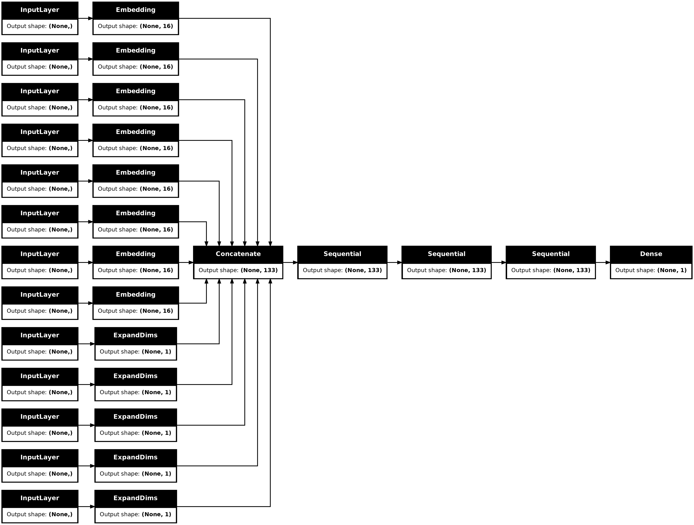

Structured data learning with TabTransformer
Author: Khalid Salama
Date created: 2022/01/18
Last modified: 2022/01/18
Description: Using contextual embeddings for structured data classification.

Introduction
This example demonstrates how to do structured data classification using TabTransformer, a deep tabular data modeling architecture for supervised and semi-supervised learning. The TabTransformer is built upon self-attention based Transformers. The Transformer layers transform the embeddings of categorical features into robust contextual embeddings to achieve higher predictive accuracy.
Setup
import keras
from keras import layers
from keras import ops
import math
import numpy as np
import pandas as pd
from tensorflow import data as tf_data
import matplotlib.pyplot as plt
from functools import partial
Prepare the data
This example uses the United States Census Income Dataset provided by the UC Irvine Machine Learning Repository. The task is binary classification to predict whether a person is likely to be making over USD 50,000 a year.
The dataset includes 48,842 instances with 14 input features: 5 numerical features and 9 categorical features.
First, let's load the dataset from the UCI Machine Learning Repository into a Pandas DataFrame:
CSV_HEADER = [
"age",
"workclass",
"fnlwgt",
"education",
"education_num",
"marital_status",
"occupation",
"relationship",
"race",
"gender",
"capital_gain",
"capital_loss",
"hours_per_week",
"native_country",
"income_bracket",
]
train_data_url = (
"https://archive.ics.uci.edu/ml/machine-learning-databases/adult/adult.data"
)
train_data = pd.read_csv(train_data_url, header=None, names=CSV_HEADER)
test_data_url = (
"https://archive.ics.uci.edu/ml/machine-learning-databases/adult/adult.test"
)
test_data = pd.read_csv(test_data_url, header=None, names=CSV_HEADER)
print(f"Train dataset shape: {train_data.shape}")
print(f"Test dataset shape: {test_data.shape}")
Train dataset shape: (32561, 15)
Test dataset shape: (16282, 15)
Remove the first record (because it is not a valid data example) and a trailing 'dot' in the class labels.
test_data = test_data[1:]
test_data.income_bracket = test_data.income_bracket.apply(
lambda value: value.replace(".", "")
)
Now we store the training and test data in separate CSV files.
train_data_file = "train_data.csv"
test_data_file = "test_data.csv"
train_data.to_csv(train_data_file, index=False, header=False)
test_data.to_csv(test_data_file, index=False, header=False)
Define dataset metadata
Here, we define the metadata of the dataset that will be useful for reading and parsing the data into input features, and encoding the input features with respect to their types.
# A list of the numerical feature names.
NUMERIC_FEATURE_NAMES = [
"age",
"education_num",
"capital_gain",
"capital_loss",
"hours_per_week",
]
# A dictionary of the categorical features and their vocabulary.
CATEGORICAL_FEATURES_WITH_VOCABULARY = {
"workclass": sorted(list(train_data["workclass"].unique())),
"education": sorted(list(train_data["education"].unique())),
"marital_status": sorted(list(train_data["marital_status"].unique())),
"occupation": sorted(list(train_data["occupation"].unique())),
"relationship": sorted(list(train_data["relationship"].unique())),
"race": sorted(list(train_data["race"].unique())),
"gender": sorted(list(train_data["gender"].unique())),
"native_country": sorted(list(train_data["native_country"].unique())),
}
# Name of the column to be used as instances weight.
WEIGHT_COLUMN_NAME = "fnlwgt"
# A list of the categorical feature names.
CATEGORICAL_FEATURE_NAMES = list(CATEGORICAL_FEATURES_WITH_VOCABULARY.keys())
# A list of all the input features.
FEATURE_NAMES = NUMERIC_FEATURE_NAMES + CATEGORICAL_FEATURE_NAMES
# A list of column default values for each feature.
COLUMN_DEFAULTS = [
[0.0] if feature_name in NUMERIC_FEATURE_NAMES + [WEIGHT_COLUMN_NAME] else ["NA"]
for feature_name in CSV_HEADER
]
# The name of the target feature.
TARGET_FEATURE_NAME = "income_bracket"
# A list of the labels of the target features.
TARGET_LABELS = [" <=50K", " >50K"]
Configure the hyperparameters
The hyperparameters includes model architecture and training configurations.
LEARNING_RATE = 0.001
WEIGHT_DECAY = 0.0001
DROPOUT_RATE = 0.2
BATCH_SIZE = 265
NUM_EPOCHS = 15
NUM_TRANSFORMER_BLOCKS = 3 # Number of transformer blocks.
NUM_HEADS = 4 # Number of attention heads.
EMBEDDING_DIMS = 16 # Embedding dimensions of the categorical features.
MLP_HIDDEN_UNITS_FACTORS = [
2,
1,
] # MLP hidden layer units, as factors of the number of inputs.
NUM_MLP_BLOCKS = 2 # Number of MLP blocks in the baseline model.
Implement data reading pipeline
We define an input function that reads and parses the file, then converts features
and labels into atf.data.Dataset
for training or evaluation.
target_label_lookup = layers.StringLookup(
vocabulary=TARGET_LABELS, mask_token=None, num_oov_indices=0
)
def prepare_example(features, target):
target_index = target_label_lookup(target)
weights = features.pop(WEIGHT_COLUMN_NAME)
return features, target_index, weights
lookup_dict = {}
for feature_name in CATEGORICAL_FEATURE_NAMES:
vocabulary = CATEGORICAL_FEATURES_WITH_VOCABULARY[feature_name]
# Create a lookup to convert a string values to an integer indices.
# Since we are not using a mask token, nor expecting any out of vocabulary
# (oov) token, we set mask_token to None and num_oov_indices to 0.
lookup = layers.StringLookup(
vocabulary=vocabulary, mask_token=None, num_oov_indices=0
)
lookup_dict[feature_name] = lookup
def encode_categorical(batch_x, batch_y, weights):
for feature_name in CATEGORICAL_FEATURE_NAMES:
batch_x[feature_name] = lookup_dict[feature_name](batch_x[feature_name])
return batch_x, batch_y, weights
def get_dataset_from_csv(csv_file_path, batch_size=128, shuffle=False):
dataset = (
tf_data.experimental.make_csv_dataset(
csv_file_path,
batch_size=batch_size,
column_names=CSV_HEADER,
column_defaults=COLUMN_DEFAULTS,
label_name=TARGET_FEATURE_NAME,
num_epochs=1,
header=False,
na_value="?",
shuffle=shuffle,
)
.map(prepare_example, num_parallel_calls=tf_data.AUTOTUNE, deterministic=False)
.map(encode_categorical)
)
return dataset.cache()
Implement a training and evaluation procedure
def run_experiment(
model,
train_data_file,
test_data_file,
num_epochs,
learning_rate,
weight_decay,
batch_size,
):
optimizer = keras.optimizers.AdamW(
learning_rate=learning_rate, weight_decay=weight_decay
)
model.compile(
optimizer=optimizer,
loss=keras.losses.BinaryCrossentropy(),
metrics=[keras.metrics.BinaryAccuracy(name="accuracy")],
)
train_dataset = get_dataset_from_csv(train_data_file, batch_size, shuffle=True)
validation_dataset = get_dataset_from_csv(test_data_file, batch_size)
print("Start training the model...")
history = model.fit(
train_dataset, epochs=num_epochs, validation_data=validation_dataset
)
print("Model training finished")
_, accuracy = model.evaluate(validation_dataset, verbose=0)
print(f"Validation accuracy: {round(accuracy * 100, 2)}%")
return history
Create model inputs
Now, define the inputs for the models as a dictionary, where the key is the feature name,
and the value is a keras.layers.Input tensor with the corresponding feature shape
and data type.
def create_model_inputs():
inputs = {}
for feature_name in FEATURE_NAMES:
if feature_name in NUMERIC_FEATURE_NAMES:
inputs[feature_name] = layers.Input(
name=feature_name, shape=(), dtype="float32"
)
else:
inputs[feature_name] = layers.Input(
name=feature_name, shape=(), dtype="int32"
)
return inputs
Encode features
The encode_inputs method returns encoded_categorical_feature_list and numerical_feature_list.
We encode the categorical features as embeddings, using a fixed embedding_dims for all the features,
regardless their vocabulary sizes. This is required for the Transformer model.
def encode_inputs(inputs, embedding_dims):
encoded_categorical_feature_list = []
numerical_feature_list = []
for feature_name in inputs:
if feature_name in CATEGORICAL_FEATURE_NAMES:
vocabulary = CATEGORICAL_FEATURES_WITH_VOCABULARY[feature_name]
# Create a lookup to convert a string values to an integer indices.
# Since we are not using a mask token, nor expecting any out of vocabulary
# (oov) token, we set mask_token to None and num_oov_indices to 0.
# Convert the string input values into integer indices.
# Create an embedding layer with the specified dimensions.
embedding = layers.Embedding(
input_dim=len(vocabulary), output_dim=embedding_dims
)
# Convert the index values to embedding representations.
encoded_categorical_feature = embedding(inputs[feature_name])
encoded_categorical_feature_list.append(encoded_categorical_feature)
else:
# Use the numerical features as-is.
numerical_feature = ops.expand_dims(inputs[feature_name], -1)
numerical_feature_list.append(numerical_feature)
return encoded_categorical_feature_list, numerical_feature_list
Implement an MLP block
def create_mlp(hidden_units, dropout_rate, activation, normalization_layer, name=None):
mlp_layers = []
for units in hidden_units:
mlp_layers.append(normalization_layer())
mlp_layers.append(layers.Dense(units, activation=activation))
mlp_layers.append(layers.Dropout(dropout_rate))
return keras.Sequential(mlp_layers, name=name)
Experiment 1: a baseline model
In the first experiment, we create a simple multi-layer feed-forward network.
def create_baseline_model(
embedding_dims, num_mlp_blocks, mlp_hidden_units_factors, dropout_rate
):
# Create model inputs.
inputs = create_model_inputs()
# encode features.
encoded_categorical_feature_list, numerical_feature_list = encode_inputs(
inputs, embedding_dims
)
# Concatenate all features.
features = layers.concatenate(
encoded_categorical_feature_list + numerical_feature_list
)
# Compute Feedforward layer units.
feedforward_units = [features.shape[-1]]
# Create several feedforwad layers with skip connections.
for layer_idx in range(num_mlp_blocks):
features = create_mlp(
hidden_units=feedforward_units,
dropout_rate=dropout_rate,
activation=keras.activations.gelu,
normalization_layer=layers.LayerNormalization,
name=f"feedforward_{layer_idx}",
)(features)
# Compute MLP hidden_units.
mlp_hidden_units = [
factor * features.shape[-1] for factor in mlp_hidden_units_factors
]
# Create final MLP.
features = create_mlp(
hidden_units=mlp_hidden_units,
dropout_rate=dropout_rate,
activation=keras.activations.selu,
normalization_layer=layers.BatchNormalization,
name="MLP",
)(features)
# Add a sigmoid as a binary classifer.
outputs = layers.Dense(units=1, activation="sigmoid", name="sigmoid")(features)
model = keras.Model(inputs=inputs, outputs=outputs)
return model
baseline_model = create_baseline_model(
embedding_dims=EMBEDDING_DIMS,
num_mlp_blocks=NUM_MLP_BLOCKS,
mlp_hidden_units_factors=MLP_HIDDEN_UNITS_FACTORS,
dropout_rate=DROPOUT_RATE,
)
print("Total model weights:", baseline_model.count_params())
keras.utils.plot_model(baseline_model, show_shapes=True, rankdir="LR")
An NVIDIA GPU may be present on this machine, but a CUDA-enabled jaxlib is not installed. Falling back to cpu.
Total model weights: 110693

Let's train and evaluate the baseline model:
history = run_experiment(
model=baseline_model,
train_data_file=train_data_file,
test_data_file=test_data_file,
num_epochs=NUM_EPOCHS,
learning_rate=LEARNING_RATE,
weight_decay=WEIGHT_DECAY,
batch_size=BATCH_SIZE,
)
Start training the model...
Epoch 1/15
123/123 ━━━━━━━━━━━━━━━━━━━━ 13s 70ms/step - accuracy: 0.6912 - loss: 127137.3984 - val_accuracy: 0.7623 - val_loss: 96156.1875
Epoch 2/15
123/123 ━━━━━━━━━━━━━━━━━━━━ 2s 13ms/step - accuracy: 0.7626 - loss: 102946.6797 - val_accuracy: 0.7699 - val_loss: 77236.8828
Epoch 3/15
123/123 ━━━━━━━━━━━━━━━━━━━━ 2s 13ms/step - accuracy: 0.7738 - loss: 82999.3281 - val_accuracy: 0.8154 - val_loss: 70085.9609
Epoch 4/15
123/123 ━━━━━━━━━━━━━━━━━━━━ 2s 13ms/step - accuracy: 0.7981 - loss: 75569.4375 - val_accuracy: 0.8111 - val_loss: 69759.5547
Epoch 5/15
123/123 ━━━━━━━━━━━━━━━━━━━━ 2s 13ms/step - accuracy: 0.8006 - loss: 74234.1641 - val_accuracy: 0.7968 - val_loss: 71532.2422
Epoch 6/15
123/123 ━━━━━━━━━━━━━━━━━━━━ 2s 13ms/step - accuracy: 0.8074 - loss: 71770.2891 - val_accuracy: 0.8082 - val_loss: 69105.5078
Epoch 7/15
123/123 ━━━━━━━━━━━━━━━━━━━━ 2s 13ms/step - accuracy: 0.8118 - loss: 70526.6797 - val_accuracy: 0.8094 - val_loss: 68746.7891
Epoch 8/15
123/123 ━━━━━━━━━━━━━━━━━━━━ 2s 13ms/step - accuracy: 0.8110 - loss: 70309.3750 - val_accuracy: 0.8132 - val_loss: 68305.1328
Epoch 9/15
123/123 ━━━━━━━━━━━━━━━━━━━━ 2s 13ms/step - accuracy: 0.8143 - loss: 69896.9141 - val_accuracy: 0.8046 - val_loss: 70013.1016
Epoch 10/15
123/123 ━━━━━━━━━━━━━━━━━━━━ 2s 13ms/step - accuracy: 0.8124 - loss: 69885.8281 - val_accuracy: 0.8037 - val_loss: 70305.7969
Epoch 11/15
123/123 ━━━━━━━━━━━━━━━━━━━━ 2s 13ms/step - accuracy: 0.8131 - loss: 69193.8203 - val_accuracy: 0.8075 - val_loss: 69615.5547
Epoch 12/15
123/123 ━━━━━━━━━━━━━━━━━━━━ 2s 13ms/step - accuracy: 0.8148 - loss: 68933.5703 - val_accuracy: 0.7997 - val_loss: 70789.2422
Epoch 13/15
123/123 ━━━━━━━━━━━━━━━━━━━━ 2s 13ms/step - accuracy: 0.8146 - loss: 68929.5078 - val_accuracy: 0.8104 - val_loss: 68525.1016
Epoch 14/15
123/123 ━━━━━━━━━━━━━━━━━━━━ 3s 26ms/step - accuracy: 0.8174 - loss: 68447.2500 - val_accuracy: 0.8119 - val_loss: 68787.0078
Epoch 15/15
123/123 ━━━━━━━━━━━━━━━━━━━━ 2s 13ms/step - accuracy: 0.8184 - loss: 68346.5391 - val_accuracy: 0.8143 - val_loss: 68101.9531
Model training finished
Validation accuracy: 81.43%
The baseline linear model achieves ~81% validation accuracy.
Experiment 2: TabTransformer
The TabTransformer architecture works as follows:
- All the categorical features are encoded as embeddings, using the same
embedding_dims. This means that each value in each categorical feature will have its own embedding vector. - A column embedding, one embedding vector for each categorical feature, is added (point-wise) to the categorical feature embedding.
- The embedded categorical features are fed into a stack of Transformer blocks. Each Transformer block consists of a multi-head self-attention layer followed by a feed-forward layer.
- The outputs of the final Transformer layer, which are the contextual embeddings of the categorical features, are concatenated with the input numerical features, and fed into a final MLP block.
- A
softmaxclassifer is applied at the end of the model.
The paper discusses both addition and concatenation of the column embedding in the Appendix: Experiment and Model Details section. The architecture of TabTransformer is shown below, as presented in the paper.

def create_tabtransformer_classifier(
num_transformer_blocks,
num_heads,
embedding_dims,
mlp_hidden_units_factors,
dropout_rate,
use_column_embedding=False,
):
# Create model inputs.
inputs = create_model_inputs()
# encode features.
encoded_categorical_feature_list, numerical_feature_list = encode_inputs(
inputs, embedding_dims
)
# Stack categorical feature embeddings for the Tansformer.
encoded_categorical_features = ops.stack(encoded_categorical_feature_list, axis=1)
# Concatenate numerical features.
numerical_features = layers.concatenate(numerical_feature_list)
# Add column embedding to categorical feature embeddings.
if use_column_embedding:
num_columns = encoded_categorical_features.shape[1]
column_embedding = layers.Embedding(
input_dim=num_columns, output_dim=embedding_dims
)
column_indices = ops.arange(start=0, stop=num_columns, step=1)
encoded_categorical_features = encoded_categorical_features + column_embedding(
column_indices
)
# Create multiple layers of the Transformer block.
for block_idx in range(num_transformer_blocks):
# Create a multi-head attention layer.
attention_output = layers.MultiHeadAttention(
num_heads=num_heads,
key_dim=embedding_dims,
dropout=dropout_rate,
name=f"multihead_attention_{block_idx}",
)(encoded_categorical_features, encoded_categorical_features)
# Skip connection 1.
x = layers.Add(name=f"skip_connection1_{block_idx}")(
[attention_output, encoded_categorical_features]
)
# Layer normalization 1.
x = layers.LayerNormalization(name=f"layer_norm1_{block_idx}", epsilon=1e-6)(x)
# Feedforward.
feedforward_output = create_mlp(
hidden_units=[embedding_dims],
dropout_rate=dropout_rate,
activation=keras.activations.gelu,
normalization_layer=partial(
layers.LayerNormalization, epsilon=1e-6
), # using partial to provide keyword arguments before initialization
name=f"feedforward_{block_idx}",
)(x)
# Skip connection 2.
x = layers.Add(name=f"skip_connection2_{block_idx}")([feedforward_output, x])
# Layer normalization 2.
encoded_categorical_features = layers.LayerNormalization(
name=f"layer_norm2_{block_idx}", epsilon=1e-6
)(x)
# Flatten the "contextualized" embeddings of the categorical features.
categorical_features = layers.Flatten()(encoded_categorical_features)
# Apply layer normalization to the numerical features.
numerical_features = layers.LayerNormalization(epsilon=1e-6)(numerical_features)
# Prepare the input for the final MLP block.
features = layers.concatenate([categorical_features, numerical_features])
# Compute MLP hidden_units.
mlp_hidden_units = [
factor * features.shape[-1] for factor in mlp_hidden_units_factors
]
# Create final MLP.
features = create_mlp(
hidden_units=mlp_hidden_units,
dropout_rate=dropout_rate,
activation=keras.activations.selu,
normalization_layer=layers.BatchNormalization,
name="MLP",
)(features)
# Add a sigmoid as a binary classifer.
outputs = layers.Dense(units=1, activation="sigmoid", name="sigmoid")(features)
model = keras.Model(inputs=inputs, outputs=outputs)
return model
tabtransformer_model = create_tabtransformer_classifier(
num_transformer_blocks=NUM_TRANSFORMER_BLOCKS,
num_heads=NUM_HEADS,
embedding_dims=EMBEDDING_DIMS,
mlp_hidden_units_factors=MLP_HIDDEN_UNITS_FACTORS,
dropout_rate=DROPOUT_RATE,
)
print("Total model weights:", tabtransformer_model.count_params())
keras.utils.plot_model(tabtransformer_model, show_shapes=True, rankdir="LR")
Total model weights: 88543

Let's train and evaluate the TabTransformer model:
history = run_experiment(
model=tabtransformer_model,
train_data_file=train_data_file,
test_data_file=test_data_file,
num_epochs=NUM_EPOCHS,
learning_rate=LEARNING_RATE,
weight_decay=WEIGHT_DECAY,
batch_size=BATCH_SIZE,
)
Start training the model...
Epoch 1/15
123/123 ━━━━━━━━━━━━━━━━━━━━ 46s 272ms/step - accuracy: 0.7504 - loss: 103329.7578 - val_accuracy: 0.7637 - val_loss: 122401.2188
Epoch 2/15
123/123 ━━━━━━━━━━━━━━━━━━━━ 8s 62ms/step - accuracy: 0.8033 - loss: 79797.0469 - val_accuracy: 0.7712 - val_loss: 97510.0000
Epoch 3/15
123/123 ━━━━━━━━━━━━━━━━━━━━ 6s 52ms/step - accuracy: 0.8202 - loss: 73736.2500 - val_accuracy: 0.8037 - val_loss: 79687.8906
Epoch 4/15
123/123 ━━━━━━━━━━━━━━━━━━━━ 6s 52ms/step - accuracy: 0.8247 - loss: 70282.2031 - val_accuracy: 0.8355 - val_loss: 64703.9453
Epoch 5/15
123/123 ━━━━━━━━━━━━━━━━━━━━ 6s 52ms/step - accuracy: 0.8317 - loss: 67661.8906 - val_accuracy: 0.8427 - val_loss: 64015.5156
Epoch 6/15
123/123 ━━━━━━━━━━━━━━━━━━━━ 6s 52ms/step - accuracy: 0.8333 - loss: 67486.6562 - val_accuracy: 0.8402 - val_loss: 65543.7188
Epoch 7/15
123/123 ━━━━━━━━━━━━━━━━━━━━ 6s 52ms/step - accuracy: 0.8359 - loss: 66328.3516 - val_accuracy: 0.8360 - val_loss: 68744.6484
Epoch 8/15
123/123 ━━━━━━━━━━━━━━━━━━━━ 6s 52ms/step - accuracy: 0.8354 - loss: 66040.3906 - val_accuracy: 0.8209 - val_loss: 72937.5703
Epoch 9/15
123/123 ━━━━━━━━━━━━━━━━━━━━ 6s 52ms/step - accuracy: 0.8376 - loss: 65606.2344 - val_accuracy: 0.8298 - val_loss: 72673.2031
Epoch 10/15
123/123 ━━━━━━━━━━━━━━━━━━━━ 6s 52ms/step - accuracy: 0.8395 - loss: 65170.4375 - val_accuracy: 0.8259 - val_loss: 70717.4922
Epoch 11/15
123/123 ━━━━━━━━━━━━━━━━━━━━ 8s 62ms/step - accuracy: 0.8395 - loss: 65003.5820 - val_accuracy: 0.8481 - val_loss: 62421.4102
Epoch 12/15
123/123 ━━━━━━━━━━━━━━━━━━━━ 12s 94ms/step - accuracy: 0.8396 - loss: 64860.1797 - val_accuracy: 0.8482 - val_loss: 63217.3516
Epoch 13/15
123/123 ━━━━━━━━━━━━━━━━━━━━ 6s 52ms/step - accuracy: 0.8412 - loss: 64597.3945 - val_accuracy: 0.8256 - val_loss: 71274.4609
Epoch 14/15
123/123 ━━━━━━━━━━━━━━━━━━━━ 11s 94ms/step - accuracy: 0.8419 - loss: 63789.4688 - val_accuracy: 0.8473 - val_loss: 63099.7422
Epoch 15/15
123/123 ━━━━━━━━━━━━━━━━━━━━ 11s 94ms/step - accuracy: 0.8427 - loss: 63856.9531 - val_accuracy: 0.8459 - val_loss: 64541.9688
Model training finished
Validation accuracy: 84.59%
The TabTransformer model achieves ~85% validation accuracy. Note that, with the default parameter configurations, both the baseline and the TabTransformer have similar number of trainable weights: 109,895 and 87,745 respectively, and both use the same training hyperparameters.
Conclusion
TabTransformer significantly outperforms MLP and recent deep networks for tabular data while matching the performance of tree-based ensemble models. TabTransformer can be learned in end-to-end supervised training using labeled examples. For a scenario where there are a few labeled examples and a large number of unlabeled examples, a pre-training procedure can be employed to train the Transformer layers using unlabeled data. This is followed by fine-tuning of the pre-trained Transformer layers along with the top MLP layer using the labeled data.